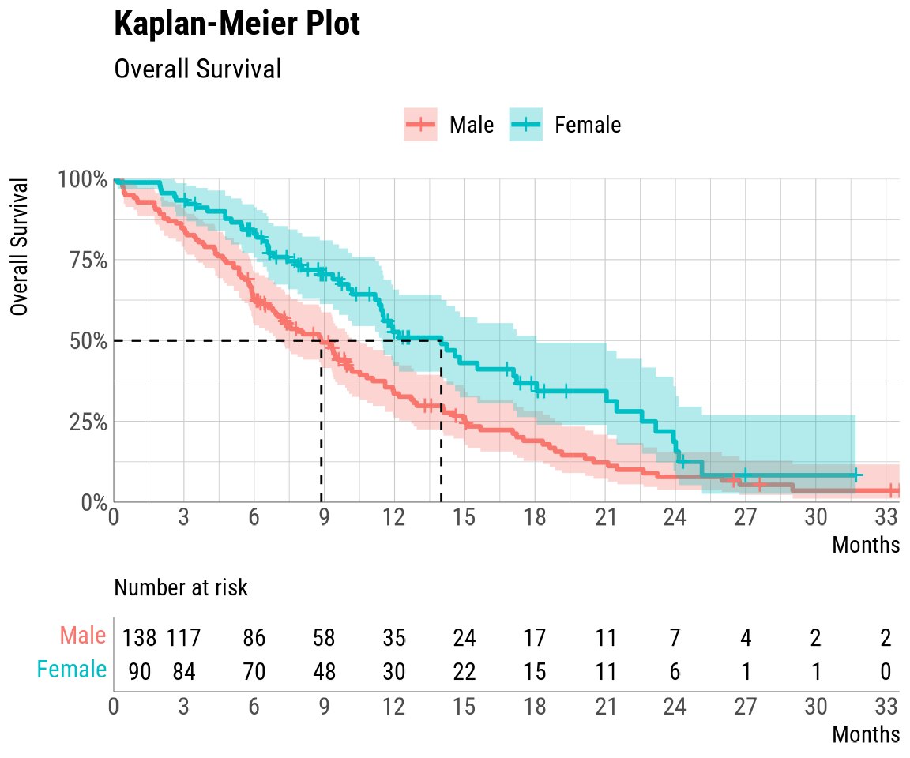
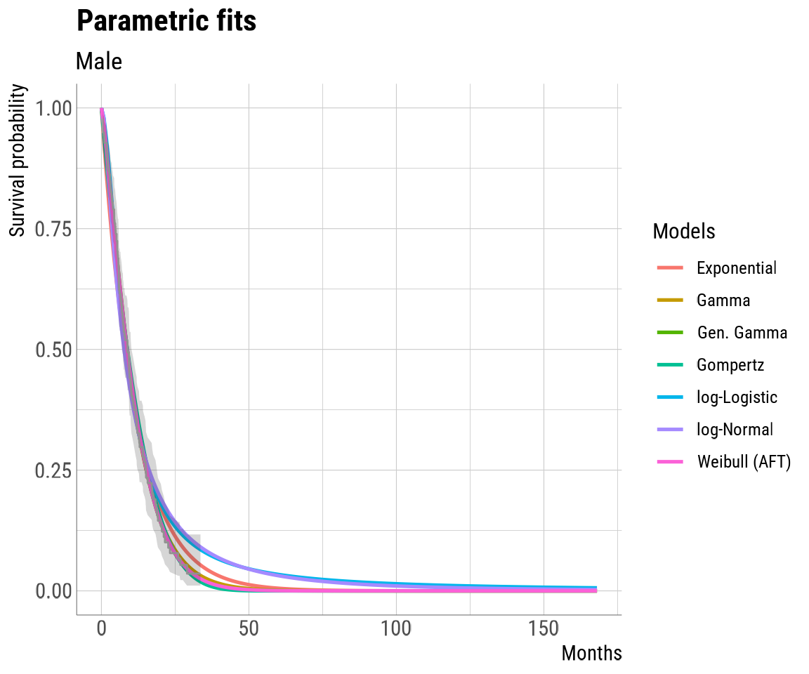

Quick Start Guide for Survival Curve Extrapolation
Niall Davison & Brad Kievit
2023-11-29
Source:vignettes/workflow_quick.Rmd
workflow_quick.RmdIntroduction
Welcome to easysurv, an R package developed by the Maple
Health Group to support basic survival analysis.
The package helps to plot Kaplan-Meier data, assess the proportional
hazards assumptions, and estimate & inspect standard parametric
survival extrapolations. easysurv can also assist in
mixture cure and spline modelling, although these are not explained in
detail here.
This guide covers the quick family of functions
(quick_start, quick_KM, quick_PH,
quick_fit, quick_to_XL) for easy survival
analysis in just a few steps. For finer control, explore other package
functions in the Survival Curve Extrapolation with easysurv
vignette.
Getting Started
- Clean the R environment to ensure there’s no interference from pre-existing R objects or functions.
- Attach easysurv so we can use its functions.
-
Load a template using the
quick_start()function.
# Start from a clean environment
rm(list=ls())
# Attach the easysurv package
library(easysurv)
# Load a easysurv analysis template
quick_start()quick_start() creates a new .R script in your R
environment, pre-loaded with code for survival analysis using the
lung dataset from the survival package.
You can also explore quick_start2() and
quick_start3(), which use different datasets: “bc” from the
flexsurv package and simulated phase III breast cancer
trial data from the ggsurvfit package, respectively.
While the three templates share similarities in their analyses, the choice of starting data sets introduces some variations, making it beneficial to review all three templates for a comprehensive understanding of the package’s versatility.
Preparing Your Data
You will need to import, assess, and clean your data before analysis.
Below, we advise some practices to ensure that easysurv can
handle your data.
Data Import
easysurv comes pre-loaded with a few data sets borrowed
from other packages. One of these is the lung data set from
the survival package, which is accessible by calling
easy_lung. We’ll store it into surv_data and
inspect the first few rows of the data.
# Data Import ------------------------------------------------------------------
surv_data <- easy_lung
# Inspect the first few rows to check it looks as expected.
head(surv_data, 6)## inst time status age sex ph.ecog ph.karno pat.karno meal.cal wt.loss
## 1 3 10.053388 2 74 1 1 90 100 1175 NA
## 2 3 14.948665 2 68 1 0 90 90 1225 15
## 3 3 33.182752 1 56 1 0 90 90 NA 15
## 4 5 6.899384 2 57 1 1 90 60 1150 11
## 5 1 29.010267 2 60 1 0 100 90 NA 0
## 6 12 33.577002 1 74 1 1 50 80 513 0
# Toggle the next comment to see entire data.
# View(surv_data)When importing your own data, there are a number of functions that can be used depending on the file format of the data. These lines of code are available in the script and can be activated as needed.
# Here are some packages & their functions you might use to import your data:
# - haven::read_sas() for SAS (.sas7bdat) files
# - haven::read_dta() for Stata (.dta) files
# - haven::read_sav() for SPSS (.sav) files
# - readxl::read_excel() for Excel (.xls & .xlsx) files
# - readr::read_csv() for .csv filesData Manipulation
We’ll attach one more package, dplyr, for data
manipulation, and adjust number formatting using
scipen.
# Attach other packages for data manipulation
library(dplyr)
# Suppress scientific notation
options(scipen = 999)The data needs to be formatted in a certain way for the survival analysis to proceed smoothly. Don’t worry, the requirements are straightforward! The data will need:
- A
timevariable specifying the times to events. - A binary
eventcolumn specifying whether the event was right-censored (event = 0) or an event (event = 1). - Optional: A
stratacolumn specifying some way to stratify the events if a comparison is of interest.
Let’s apply these requirements to the lung dataset we
imported and stored as surv_data.
surv_data <- surv_data |>
dplyr::mutate(
time = time,
event = status - 1,
strata = sex
) |>
dplyr::mutate_at("strata", as.factor) |>
dplyr::as_tibble() |>
dplyr::select(time, event, strata) # Optional: Just keep variables of interestWe took the following steps:
- Left
timeas is. - Generated
eventvariable by transforming the existingstatusvariable.statuswas coded as “1” for censoring and “2” for events, but our package (in line with standard survival packages) uses “0” for right-censoring and “1” for events. To fix this, we simply subtracted 1 fromstatus. - Generated the
stratavariable usingsex, later converting it to a factor. - Converted the dataset into a “tibble” for easier manipulation, and
optionally, removed unnecessary columns using select() from
dplyr.
Data Labelling and Inspection
Let’s take a look at our strata column, to understand
the sample size of each group.
# See the levels of the strata
surv_data |> count(strata)## # A tibble: 2 × 2
## strata n
## <fct> <int>
## 1 1 138
## 2 2 90We see that there are 138 instances of the “1” value and 90 instances of the “2” value. Since we’re stratifying by sex, this isn’t very helpful. Let’s then rename these levels correctly as “Male” and “Female”.
We can update other labeling too.
# Assign strata labels in a consistent order with the levels command
levels(surv_data$strata) <- strata_labels <- c("Male", "Female")
# Overwrite any labels impacted by re-coding
attr(surv_data$event, "label") <- "0 = Censored, 1 = Event"
# Define an endpoint label which can be used in plots (if desired)
endpoint_label <- "Overall Survival"Our data should be ready for survival analysis now, but we want to make sure everything is set up correctly. We can take a look at the top few rows of our “tibble”.
# Make sure the data appears as expected.
# A tibble prints the first 10 rows by default
surv_data## # A tibble: 228 × 3
## time event strata
## <dbl> <dbl> <fct>
## 1 10.1 1 Male
## 2 14.9 1 Male
## 3 33.2 0 Male
## 4 6.90 1 Male
## 5 29.0 1 Male
## 6 33.6 0 Male
## 7 10.2 1 Female
## 8 11.9 1 Female
## 9 7.16 1 Male
## 10 5.45 1 Male
## # ℹ 218 more rowsWe’ll do a final sense check of sample sizes and the number of censors/events.
# See sample sizes and censor/event counts
surv_data |> count(strata)## # A tibble: 2 × 2
## strata n
## <fct> <int>
## 1 Male 138
## 2 Female 90
surv_data |> count(strata, event)## # A tibble: 4 × 3
## strata event n
## <fct> <dbl> <int>
## 1 Male 0 26
## 2 Male 1 112
## 3 Female 0 37
## 4 Female 1 53This summary is more informative than before. It shows more males than females were in the data, and that a greater proportion of females were right censored. This could be something to be mindful of as we proceed with the analysis.
Quick Workflow Using easysurv
Now that our data set is properly set up, we can begin with the
easysurv analysis! In this quick workflow, most of
the heavy lifting will be done by a set of functions with the
quick_ prefix. The first of these is the
quick_KM function.
Kaplan Meier analysis
The quick_KM function produces an object with 5
components, containing all the of Kaplan-Meier data we might need:
-
KM_all: A
survfitmodel that includes the whole data set (comparing across strata) usingSurv(time, event) ~ as.factor(strata)as the formula. -
KM_indiv: A set of
survfitmodels for each individual strata in the data set usingSurv(time, event) ~ 1as the formula. - KM_stepped: A table summarizing the KM survival over time, but presented in a “stepped” manner that is useful for plotting in Excel.
-
KM_plot: A plot of the Kaplan Meier curve using the
easysurvtheme. - KM_summary: Summary information for each of the strata, which includes sample sizes, the number of events, restricted mean survival, median survial and corresponding confidence intervals.
We’ll run this function with our surv_data tibble,
providing the names used for the time, event
and strata variables, along with a few optional arguments
that you can learn about in more detail by typing ?quick_KM
into your console.
KM_check <- easysurv::quick_KM(
data = surv_data,
time = "time",
event = "event",
strata = "strata",
# Some of the optional arguments for easysurv...
strata_labels = strata_labels,
add_time_0 = TRUE,
# Some of the optional arguments for ggsurvplot...
title = "Kaplan-Meier Plot",
subtitle = endpoint_label,
ylab = endpoint_label,
xlab = "Months",
xscale = 1, # display in months (original)
break.x.by = 3 # 3 month breaks
)
KM_check## The quick_KM function has produced the following outputs:
## - KM_all
## - KM_indiv
## - KM_stepped
## - KM_plot
## - KM_summary
##
## Assign the output to an object to view it in detail.
##
## Below is the KM_summary. The KM_plot has been automatically printed.
## 
## group records events rmean se(rmean) median 0.95LCL 0.95UCL
## Male Male 138 112 10.71324 0.7527413 8.870637 6.965092 10.18480
## Female Female 90 53 15.13420 1.1397075 13.995893 11.433265 18.06982
## Median follow-up
## Male 27.59754
## Female 17.37988The quick_KM function works by combining uses of the
survival::survfit(), easysurv::plot_KM,
easysurv::summarise_KM and easysurv::step_KM
functions.
We stored the output in KM_check. Calling KM_check gives
us a quick summary but, since it’s a list object, if we want to look at
any individual component, we need to call it by name in double square
brackets. For example,
KM_check[["KM_plot"]]
Diagnostic tests
Next, we want to run some diagnostics tests, which will be
informative for future curve fitting. For this, we’ll use another
consolidated function, quick_PH(). The output is another
list object with five components:
-
cloglog_plot: A log cumulative hazard plot with the
easysurvtheme. -
coxph_model: A
summary.coxPHobject containing statistical test outputs, namely the Cox PH hazard ratio and confidence intervals. -
survdiff: A
survdiffobject that summarizes a log-rank test, which tests for differences in survival between strata. If p-values are > 0.05, differences are not statistically significant. -
coxzph_ph_test: A
summary.coxPHobject containing statistical test outputs, namely around whether the data violates the proportional hazards assumption or not. -
schoenfeld_plot: A Schoenfeld residuals plot in the
easysurvtheme.
We’ll run the function using surv_data, supplying the
mostly self-explanatory arguments. You can type ?quick_PH
in the console or visit the other vignette for more information.
PH_check <- easysurv::quick_PH(
data = surv_data,
time = "time",
event = "event",
strata = "strata",
strata_labels = strata_labels, # Optional
subtitle = endpoint_label # Optional
)
PH_check## The quick_PH function has produced the following outputs:
## - cloglog_plot
## - coxph_model
## - survdiff
## - cox.zph_PH_test
## - schoenfeld_plot
##
## Assign the output to an object to view it in detail.
##
##
## ---- survival::coxph output -----------------------
## ---- note: exp(coef) provides Hazard Ratio(s). ----
##
## Call:
## survival::coxph(formula = fit_joint, data = data)
##
## n= 228, number of events= 165
##
## coef exp(coef) se(coef) z Pr(>|z|)
## strataFemale -0.5310 0.5880 0.1672 -3.176 0.00149 **
## ---
## Signif. codes: 0 '***' 0.001 '**' 0.01 '*' 0.05 '.' 0.1 ' ' 1
##
## exp(coef) exp(-coef) lower .95 upper .95
## strataFemale 0.588 1.701 0.4237 0.816
##
## Concordance= 0.579 (se = 0.021 )
## Likelihood ratio test= 10.63 on 1 df, p=0.001
## Wald test = 10.09 on 1 df, p=0.001
## Score (logrank) test = 10.33 on 1 df, p=0.001
##
##
##
##
##
## ---- survival::survdiff output --------------------
## ---- note: survdiff tests for differences in ------
## ---------- survival between strata, using a ------
## ---------- log-rank test. ------------------------
## ---------------------------------------------------
## ---------- If p-values > 0.05, differences are ----
## ---------- not statistically significant. ---------
##
## Call:
## survival::survdiff(formula = fit_joint, data = data)
##
## N Observed Expected (O-E)^2/E (O-E)^2/V
## strata=Male 138 112 91.6 4.55 10.3
## strata=Female 90 53 73.4 5.68 10.3
##
## Chisq= 10.3 on 1 degrees of freedom, p= 0.001
##
##
##
##
## ---- survival::cox.zph output ---------------------
## ---- note: tests proportional hazards assumption --
## ---------------------------------------------------
## -----------If p-values > 0.05, do not reject ------
## -----------PH assumption --------------------------
##
## chisq df p
## strata 2.86 1 0.091
## GLOBAL 2.86 1 0.091
##
##
##
## The log cumulative hazard and Schoenfeld residuals plots have been automatically printed.This function combines the use of easysurv::plot_KM for
plotting the log cumulative hazard, survival::coxph and
survival::cox.zph for fitting a Cox model,
survival::survdiff for testing differences in survival, and
easysurv::ggcoxdiagnostics for producing a Schoenfeld
plot.
As with KM_check, PH_check is a list object, so individual components can be called using double square brackets. However, the output of this object supplies all the plots and tests in quick succession, which we can scroll/click through as needed.
Fitting Survival Models
Now that we have better statistical awareness of our data, we can fit
curves to the data. Off the top, we need to decide what kind of analysis
we want to do. easysurv has 4 different options, and we can
choose one, some or all of them:
- Separate parametric model fitting
- Joint parametric model fitting
- Mixture cure model fitting
- Spline model fitting
Once decided, we can set our preferences. In this instance, we will choose to do just the standard separate parametric fits.
## Choose Model Fit Approaches ---------------------------------------------
# After assessing the Kaplan Meier and Proportional Hazards outputs,
# choose a set of analyses to perform.
do_standard <- TRUE # TRUE: run standard parametric model fits (separate)
do_joint <- FALSE # TRUE: run standard parametric model fits (joint)
do_cure <- FALSE # TRUE: run mixture cure model fits
do_splines <- FALSE # TRUE: run spline model fitsWe also need to select our distributions of interest. We can choose
as many or as few as we want, so long as it’s available as a dist option
in flexsurvreg, which is the underlying function of our
custom fitting function.
Here, we’re going to fit curves to “Exponential”, “Gamma”,
“Generalized Gamma”, “Gompertz”, “log-logistic”, “log-normal” and
“Weibull” distributions. With gamma as an exception, these are the
distributions recommended by NICE in Technical Support Document (TSD)
14, “Survival
analysis: Extrapolating patient data”. Gamma has been included
because it has been required by other HTA bodies, including CADTH. The
notation for these distributions is defined per
flexsurvreg.
dists_global <- c(
"exp",
"gamma",
"gengamma",
"gompertz",
"llogis",
"lnorm",
"weibull"
)You can specify the times over which we want to generate and plot
extrapolations Here, we’ll use the seq() function to start
at time = 0 and go out to 5 times the maximum supplied survival value
from the data set. We’ll also specify that between these two times, we
want 200 equally spaced time points.
# Times over which to generate/plot extrapolations
times <- seq(
from = 0,
to = ceiling(max(surv_data$time) * 5),
length.out = 200
)We are now ready to use the quick_fit functions, which
consolidate the entire fitting process into one step. There is one
function for each type of analysis: quick_fit(),
quick_fit_joint(), quick_fit_cure() and
quick_fit_splines(). In this case, we will only use
quick_fit() since we only want to complete a standard
separate parametric fitting. Nevertheless, the process is very similar
for the other quick_fit functions and you can get information
on each one by typing the name of the function, prefixed with a “?”, in
the console.
The script has a set of conditions set up so we don’t need to specifically find the quick_fit functions we want to use and avoid the ones we don’t. We can simply click through the whole “## Model Fitting —-” section.
As we click through this section, we’ll execute the
quick_fit() function. Of note, we supplied our times over
which we want to generate/plot extrapolations in the times
argument.
### Separate fits --------------------------------------------------------------
if (do_standard) {
dists <- dists_global
# Toggle line below to see the function help
# ?quick_fit
# Fit models
fit_check <- easysurv::quick_fit(
data = surv_data,
time = "time",
event = "event",
strata = "strata",
dists = dists,
# Optional easysurv arguments
times = times,
strata_labels = strata_labels,
xlab = "Months",
add_interactive_plots = TRUE
)
}## gompertz mean survival time not calculable.## gengamma mean survival time not calculable.To view the output of this object, we can continue to click through the next section, “## See Outputs —-”, which are also set up conditionally, so we don’t need to specifically find the outputs we created and avoid the ones we didn’t.
As with the other quick objects, fit_check is a
list object with 9 components than can be called individually using
double square brackets:
- converged: A list of all the successfully converged distributions for each strata.
-
fits: A
survHE::fit.modelsoutput, containing theflexsurvobjects for each converged distribution for each strata. - hazard_plots: Smoothed hazard plots for each strata.
-
hazard_plotly: If the
add_interactive_plotsargument was set toTRUE. A set of interactiveplotlyhazard plots, that can accessed in the Viewer panel of RStudio, for each strata. - fit_plots: Plots of the curve extrapolations over the supplied times for each strata.
-
fit_plotly: If the
add_interactive_plotsargument was set toTRUE. A set of interactiveplotlysurvival plots, that can accessed in the Viewer panel of RStudio, for each strata. - **goodness_of_fit: AIC and BIC outputs, along with their relative ranks for each distribution.
-
surv_params: The
flexsurvparameters for each distribution and strata, along with their variance-covariance matrices. - predicted_fits: Predicted survival proportions over the supplied times for each strata.
For example, we can see a plot of our survival data alongside the
curve extrapolations by calling our newly created fit_check
and specifying the component of interest using double square
brackets.
fit_check[["fit_plots"]][["Male"]]
Exporting results to Excel
All of the objects created by the set of quick functions,
are formatted in such a way that they export easily to Excel. For those
who want to export all of these results, we can leverage the
openxlsx package. We’ll start by creating a new blank
workbook.
## Excel Exports ----------------------------------------------------------------
# Create a new workbook object
wb <- openxlsx::createWorkbook()We can now use the quick_to_XL function to take each of
the objects created by the quick functions and put them in the
blank workbook. As with above, these are set up conditionally depending
on what analyses were performed, so we can simply click through this
section.
# The "quick_to_XL" function prepares easysurv outputs for Excel exporting.
# Note that plots will be reproduced at a different DPI setting for Excel.
# This may make them appear strange in R temporarily.
quick_to_XL(wb = wb, quick_object = KM_check)
quick_to_XL(wb = wb, quick_object = PH_check)
if (do_standard) easysurv::quick_to_XL(wb = wb, quick_object = fit_check)
if (do_joint) easysurv::quick_to_XL(wb = wb, quick_object = fit_check_joint)
if (do_cure) easysurv::quick_to_XL(wb = wb, quick_object = fit_check_cure)
if (do_splines) easysurv::quick_to_XL(wb = wb, quick_object = fit_check_splines)Lastly, we’ll give this document a name, which is set to be “easysurv output -” along with the date and time, we’ll save the document and we’ll open it up!
# Give the workbook a name ending in .xlsx
output_name <- paste0(
"easysurv output - ",
format(Sys.time(), "%Y-%m-%d %H.%M"),
".xlsx"
)
# Save the workbook - you can choose a directory before this if desired.
openxlsx::saveWorkbook(wb, file = output_name, overwrite = TRUE)
# Open the workbook and assess contents.
openxlsx::openXL(output_name)Conclusion
And with that, we have a set of standard parametric model outputs in
both R and Excel! Look out for future functionality and vignettes and be
sure to check out the templates produced by quick_start2()
and quick_start3(). If you encounter any bugs or issues,
please reach out to the authors.